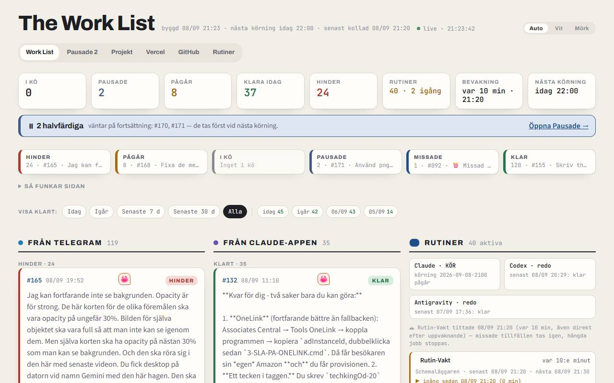

💎the-work-list
GitHub129 unsaved
About
Marcs uppdrag från Telegram-boten och Claude-mobilappen som en lista på webben. Bevakningen (WorkList-Poll) tittar var tionde minut medan datorn är vaken och kör det som kommit; 08:00, 13:00 och 22:00 väcks datorn för en full körning (WorkList-Run). Varje uppd
Last done
- 2026-10-04Fix Work List GitHub login validation
- 2026-10-02OpenEvidence: hitta VPN-knappen/reglaget på skärmen, kolla USA, Auth0-inloggning i två steg
- 2026-10-02findClaude: hitta claude.exe i <version>/<hash>/ (appens nya layout)
- 2026-10-01Tidslinje: hälso-/ekonomiprojekt samlas i neutral kolumn Privat, kortet heter Privat uppdatering; alla regler base64-kodade
- 2026-10-01Tidslinje: klickbara kort med detaljpanel (bottenark på mobil), förhandsvisning, commit-hash/filer/brödtext; hela texten prövas mot tvätten,
- 2026-10-01Tidslinje: simbanor per projekt (/tidslinje) + privat dagsammanfattning
Subpages